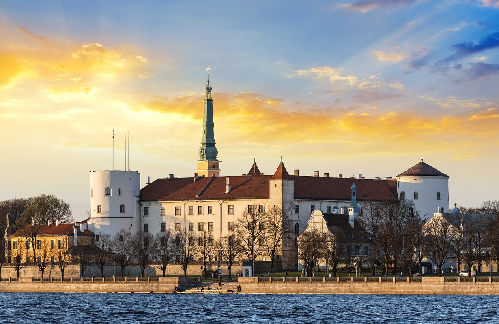
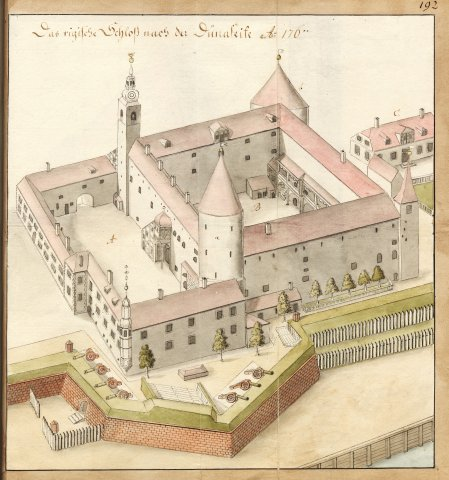
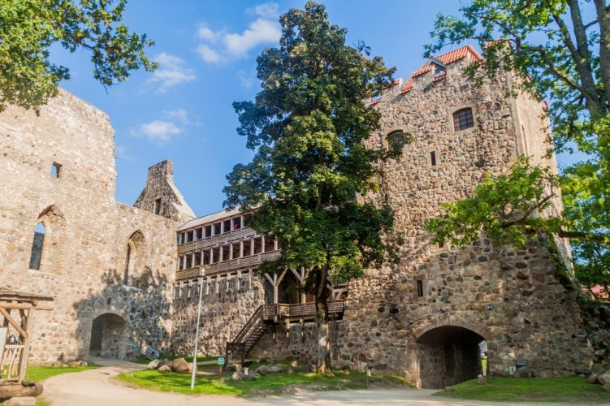
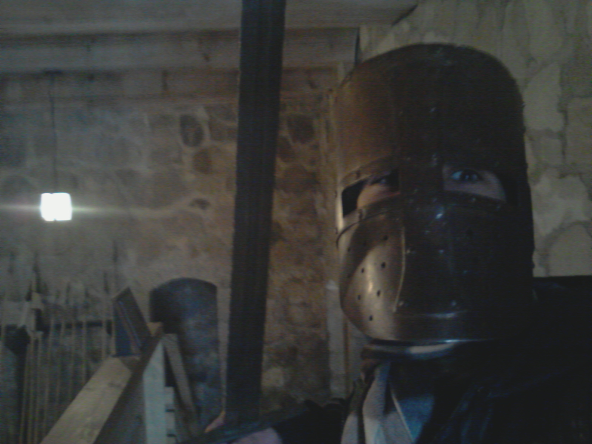
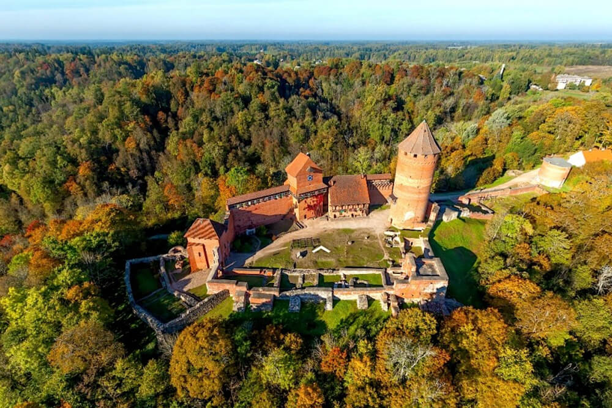
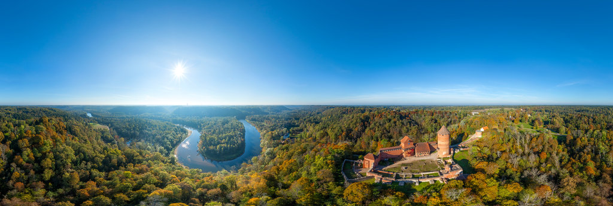
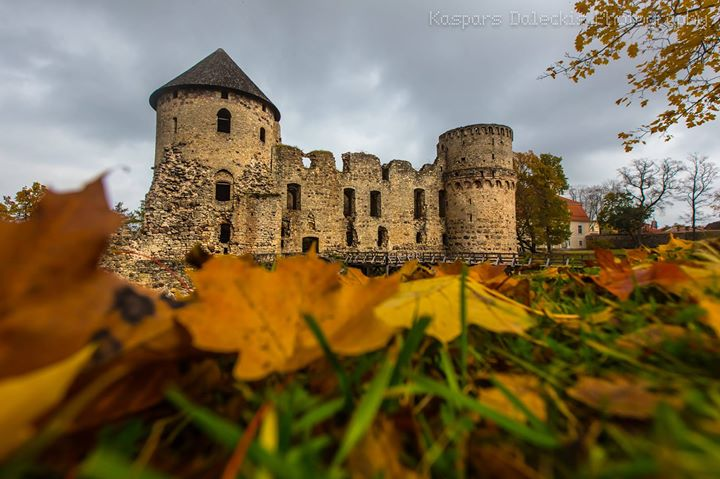
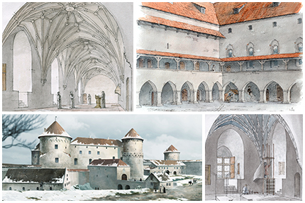
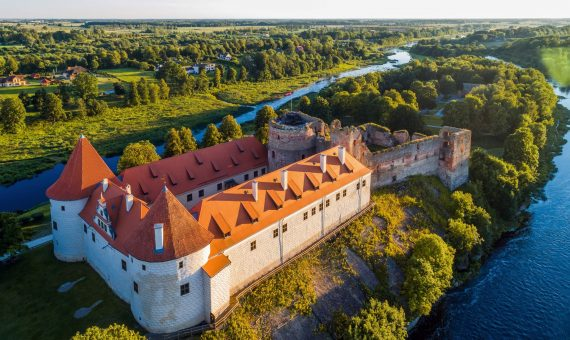
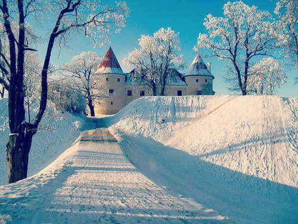

Top 5 Castelos da Letonia
A Letônia possui uma rica história medieval. Chamada de “Terra Mariana” ou “Livônia” pelos cavaleiros cristãos, a região báltica foi o último lugar na Europa a ser cristianizado. Devido à sua localização como centro de rotas de comércio entre escandinavia e leste europeu, além de ser um entrave entre o ocidente católico e oriente ortodoxo, a Letônia foi por muitos séculos um campo de batalha.
O que são castelos? Castelos (Castellum em latim, “lugar fortificado”) são construções militares européias criadas durante a idade média para usos militares e administrativos. Eles possuem características arquitetônicas conforme seu uso, como fossos, pontes levadiças, torres, etc…
Nem todo castelo é feito de pedra, na Letônia, por exemplo, há muitos castelos construídos utilizando tijolos, pois o barro era abundante na região. Inclusive, até o século 12 quase todo castelo era construído com madeira, e apenas a partir do século 13 castelos de pedra se tornaram popular.
Nesta lista iremos considerar apenas construções que cabem na definição de castelo medieval. Isso significa que palácios, palacetes e solares (muito populares na Letônia) não entrarão na lista. Por exemplo, o Palácio de Rundale não é um castelo (não possui uso militar e não foi construído durante a idade média!), e castelos como o Neuschwanstein na alemanha também não entrariam (sem uso militar e construído no séc. 19).
 As ruínas dos castelos letos até hoje servem como parques. Casamento leto nas ruinas do castelo de Dobele, pela fotogafa Annija Veldre.
As ruínas dos castelos letos até hoje servem como parques. Casamento leto nas ruinas do castelo de Dobele, pela fotogafa Annija Veldre.
Por quê castelos eram construídos? A posição geográfica da Letônia sempre favoreceu o intercâmbio cultural. O país é plano, com uma grande área costeira ideal para rotas comerciais. Além disso, a Letônia possui estuários de rios que permitem que a baía de Riga não congele no inverno, algo muito importante para os séculos antes da invenção de navios quebra-gelo.
É por isso que controlar essas rotas de comércio sempre foi importante para quem controlasse o país. Portanto, castelos forneciam uma espécie de “base” que nobres pudessem lançar ataques ou se defender. Além disso, eles serviam como construções administrativas para as vilas ao seu redor.
E os castelos da Letônia? Como a Letônia era uma região importante por conectar as rotas de comércio escandinavas com as européias, além das regiões ortodoxas (na Rússia) com a Europa católica, muitas guerras aconteceram no país. Por isso há muitos e muitos castelos construídos na Letônia, muitas vezes vários castelos de nobres rivais na mesma cidade (a cidade de Sigulda, por exemplo, possui 3 castelos “inimigos”.
Em geral, os castelos mais antigos da Letônia eram construídos com madeira e portanto, nenhum sobreviveu até os dias de hoje. Os castelos construídos com pedra, com exceção do castelo de Riga, existem ainda hoje como ruínas.
1. Castelo de Riga
 Foto de Pozstos/Shutterstock.com
O primeiro castelo de Riga foi construído em 1211, logo após a fundação da cidade. Esse castelo foi destruído em 1330 devido à diversos confrontos com os habitantes da cidade. O segundo castelo então foi construído do lado de fora dos muros da cidade, onde fica até hoje.
Seu formato original era de um edifício de três andares com um pátio no meio e quatro torres. Após outra destruição e reforma, em 1515 duas torres foram substituídas por torres redondas, chamadas de Torre do Espírito Santo e Torre de Chumbo, no seu topo hoje voam as bandeiras da Letônia e o estandarte do presidente.
Sua arquitetura atual é no estilo de Classicismo tardio. O castelo em sí é bem simples, algo explicado por sua natureza militar e constante destruição. Após a guerra da independência, a parte norte do castelo se tornou a residência do Presidente da Letônia, enquanto o restante da construção é um museu.
O castelo possui diversos mitos e lendas, a maior parte envolvendo as inúmeras guerras que Riga esteve envolvida. Devido à os supostos túneis subterrâneos no castelo, nunca saberemos quais dessas histórias são reais e quais são fictícias. Vale a pena visitar se você estiver em Riga!
 Desenho do Castelo de Riga no século 18.
2. Castelo de Sigulda

Construído em 1207, o castelo de Sigulda é um dos castelos de pedra mais antigos da Letônia, localizado no vale do Gauja, um dos rios mais importantes da Letônia. Ele foi construído pelos cavaleiros medievais como uma base para cristianizar a região e lutar contra os letos pagões.
Após a construção do castelo de Turaida – apenas 2km de distância – pelo bispo de Riga, os dois castelos se tornaram “rivais” históricos, quase sempre participando de lados opostos em guerras. Ele eventualmente foi abandonado após o término da Grande Guerra do Norte, no século 18.
Em 1773, o castelo se tornou uma propriedade privada. A família nobre então construiu em 1878 um novo castelo de estilo Neogótico na frente das ruínas do castelo antigo. Hoje, além de museu o castelo de Sigulda permite que você se vista com equipamento medieval.
 O Autor deste artigo, com uma espada e capacete medieval.
3. Castelo de Turaida

Durante uma guerra para cristianizar os pagões da região, o bispo de Riga destruiu o castelo de madeira do rei Kaupo da Livônia e ordenou a construção de um castelo de tijolos que recebeu o nome de Turaida, que significa jardim de Thor em Livônio.
Sob ordems do bispo, o novo castelo começou a ser construído em 1214 com seus característicos tijolos vermelhos. Ele se situa do outro lado do Rio Gauja, apenas 2 km de distância do Castelo de Sigulda, que logo se tornou um castelo rival: durante grande parte de suas histórias, os dois castelos estiveram em lados opostos de guerras.
Após a invenção da pólvora, o castelo foi aos poucos perdendo sua importância. Após um incêndio devastador em 1776, o castelo de Turaida foi abandonado. Após a independência da Letônia, a reforma agrária fez com que o castelo se tornasse propriedade do governo, que então passou a aluga-lo para o Sindicato dos Professores.
Hoje o terreno do castelo serve como um grande museu ao ar livr, com um parque florestal incrível com trilhas naturais. No território do castelo, costumam realizar-se muitas atividades medievais como o arquearia. Este é um dos castelos mais populares da Letônia para atividades familiares.
 O Autor deste artigo, com uma espada e capacete medieval.
4. Castelo de Cesis

Cesis é uma cidade no coração da Letônia que ficou famosa recentemente pela descoberta arqueológica de inscrições na parede do castelo. No ano de 1206, a tribo pagã que lá habitava se converteu ao cristianismo e se aliou aos cruzados cristãos, que passaram a habitar no castelo de madeira que havia na cidade, aos poucos substituindo a madeira por pedra.
Apesar de ser descrita pelos cronistas medievais como “um dos menores castelos”, Cesis resistiu a diversos cercos e guerras. Em 1237 o castelo foi reconstruído e se tornou formidável. Após a expulsão dos cavaleiros do Castelo de Riga, Cesis se tornou a capital da Letônia medieval.
Durante uma guerra com a Rússia, a cidade foi cercada em 1577 e a população se protegeu dentro do castelo. A pequena centena de soldados, junto com mulheres e crianças, resistiram por 5 dias os milhares de soldados russos. O Czar Russo, Ivan, o Terrível, prometeu que mesmo quem se rendesse não seria poupado. Para poupar a tortura que sofreriam nas mãos russas, os 300 sobreviventes decidiram realizar um suicídio coletivo explodindo o castelo com pólvora – um evento considerado uma das grandes tragédias europeias no começo da era moderna.
Apesar da vitória, os russos não conseguiram ganhar a guerra. O castelo posteriormente virou um solar para as famílias nobres da região até se tornar um parque em 1830. Hoje o castelo é um museu.
 Castelo de Cesis, em seu zênite em 1550.
5. Castelo de Bauska

O Castelo de Bauska está em uma apertada península formada pela confluência de dois rios, portanto, a posição do castelo era essencial para qualquer exército que marchasse pelo sul da Letônia.
O morro onde hoje o castelo está localizado era o sítio de um antigo castelo de madeira dos letos pagões que habitavam a região, os Semigálios. A construção do castelo atual começou em 1443 e continuou até o séc. 16., quando se tornou a residência dos Duques da Curlândia.
O castelo foi explodido por tropas russas em 1706 e apenas começou a ser reconstruído em 1874. Hoje o castelo de Bauska é uma junção das ruínas do castelo medieval e do castelo reconstruído e funciona como museu.
